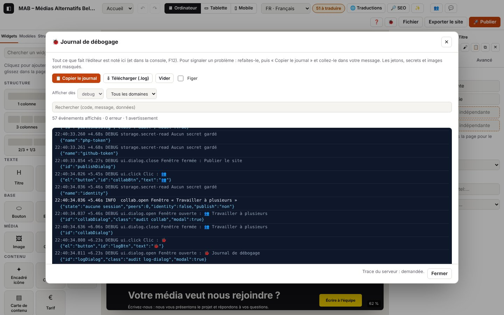

0. Le journal de débogage

Sur cette page
Atelier note tout ce qu'il fait : dans la console du navigateur (F12), dans la fenêtre 🐞 Journal, et, sur l'hébergement, dans le journal du serveur tenu par publish.php. Ce chapitre explique comment récupérer ces journaux, comment les lire et comment les régler.
Domaines du journal : boot.* (démarrage), log.* (le journal lui-même), app.* (erreurs et événements du navigateur), ui.* (ce que tu fais : clics, champs, fenêtres, raccourcis, messages), net.* (requêtes réseau), perf.* (lenteurs), php.* (lignes venues de publish.php).
Tout vérifier d’un coup : ouvre l’éditeur avec
?autotestau bout de l’adresse (ou tapeautotest()dans la console, ou Ctrl+K « Auto-test ») : les cas d’usage de ce guide sont rejoués et le rapport s’affiche, prêt à copier ; ton projet est remis comme avant à la fin (chapitre 15).
0.1 Copier le journal pour signaler un problème
But : envoyer, en un collage, tout ce qu'il faut pour comprendre un problème.
Étapes
- Refais l'opération qui pose problème (inutile de recharger la page avant : le journal garde les 5000 derniers événements depuis l'ouverture de l'éditeur).
- Clique sur 🐞 dans la barre du haut (ou Ctrl+Alt+J, ou Ctrl+K puis « Journal »).
- Clique 📋 Copier le journal et colle dans ton message. Si le navigateur refuse la copie, clique ⇩ Télécharger (.log) et joins le fichier.
Ce que tu vois : la fenêtre « 🐞 Journal de débogage » avec les lignes en direct (les 500 dernières), le nombre d'erreurs et d'avertissements. La pastille rouge sur 🐞 compte les erreurs depuis le démarrage.
Journal attendu (extrait réel, avec les lignes ui.* : journaux/journal-fenetre.log)
Détails techniques : journal attendu
04:38:02.233 +2.66s DEBUG ui.click Clic : 🐞1 {"el":"button","id":"logBtn","text":"🐞1"}
04:38:02.236 +2.67s DEBUG ui.dialog.open Fenêtre ouverte : 🐞 Journal de débogage {"id":"logDialog","class":"audit log-dialog","modal":true}
04:38:02.686 +3.12s DEBUG ui.click Clic : 📋 Copier le journal {"el":"button","text":"📋 Copier le journal","data":{"logCopy":""},"dialog":"logDialog"}
04:38:02.709 +3.14s WARN log.copy-fail Copie refusée par le navigateur : utilisez « Télécharger » {"error":"Failed to execute 'writeText' on 'Clipboard': Write permission denied."}
04:38:03.116 +3.54s DEBUG ui.click Clic : ⇩ Télécharger (.log) {"el":"button","text":"⇩ Télécharger (.log)","data":{"logDownload":""},"dialog":"logDialog"}
04:38:03.136 +3.56s INFO log.download Journal téléchargé {"chars":3603}Dans un Chrome normal, la copie réussit : log.copy (INFO) avec le nombre de caractères copiés et de lignes du serveur ajoutées. Ici, le navigateur des tests n'a pas le droit d'écrire dans le presse-papiers : c'est la variante log.copy-fail.
Le texte copié commence par l'environnement, puis les événements :
=== Journal Atelier ===
atelier : cycle 16 · publish.php attendu v4
date : 2026-10-29T03:38:03.134Z
fuseau : Asia/Tokyo
adresse : https://…/atelier/index.html
navigateur : Google Chrome 148, Chromium 148
plateforme : macOS
langues : fr-BE, fr, ja
écran : 1728×1117 · fenêtre 1440×900 · ×2
machine : 10 cœurs · 8 Go
réseau : en ligne · 4g
stockage : 41 Mo utilisés sur 299 Go
journal : console debug · tampon debug · trace serveur oui
projet : {"nom":"MAB – Médias Alternatifs Belges","langues":["fr","nl","de","en"],"pages":2,"éléments":57,…}
éditeur : {"page":"p_zdmisxft","langue":"fr","appareil":"desktop","sélection":null,"édition":"page",…}
ia : {…} (chapitre 7)
collaboration : {…} (chapitre 10)
événements : 214 · erreurs : 0 · avertissements : 1
04:23:19.490 +0.00s INFO boot.log Journal prêt …Variantes
| Situation | Ce qui change | Journal |
|---|---|---|
| Copie acceptée | « Journal copié : collez-le dans votre message. » | log.copy (INFO) {"chars":…, "server":…} |
| Copie refusée (navigateur, onglet non actif) | « La copie est refusée par le navigateur : utilisez « Télécharger ». » | log.copy-fail (WARN) |
| Fichier plutôt que copie | un fichier atelier-journal-AAAA-MM-JJ-HH-MM-SS.log est téléchargé | log.download (INFO) |
| Repartir de zéro avant de refaire un essai | « Vider » efface le tampon et remet les compteurs à zéro | log.clear (INFO) |
| Journal du serveur lu avant la copie | ses lignes sont ajoutées à la fin, sous « === Journal du serveur (publish.php) === » | voir 0.4 |
Erreurs
| Situation | Message affiché | Journal | Que faire |
|---|---|---|---|
| Le bouton 🐞 n'apparaît pas, l'éditeur reste blanc | rien, ou un éditeur à moitié affiché | dans la console seulement : [Atelier] boot.error …, boot.resource, boot.rejection, puis après 15 s boot.timeout (ERROR) | ouvre la console (F12), copie toutes les lignes [Atelier] (voir 0.2) |
0.2 Lire le journal dans la console (F12)
But : suivre le journal en direct, ou le récupérer quand l'éditeur ne démarre pas.
Étapes
- Ouvre les outils de développement : F12 (ou Cmd+Option+I sur Mac), onglet Console.
- Tape
[Atelier]dans le filtre pour ne voir que les lignes d'Atelier. - Pour tout copier d'un coup : tape
atelierDebug.copy()puis Entrée (le texte complet, avec l'environnement, va dans le presse-papiers) ; ouatelierDebug.download().
Ce que tu vois : chaque ligne commence par [Atelier] en couleur : gris (DEBUG), bleu (INFO), orange (WARN), rouge (ERROR). Les lignes DEBUG s'affichent au niveau « Infos » de la console (pas besoin d'activer « Verbose »), les TRACE seulement au niveau « Verbose ». Pour une erreur, l'objet Error suit la ligne : clique dessus pour voir la pile d'appels avec les liens vers le code.
Commandes de la console
| Commande | Effet |
|---|---|
atelierDebug.copy() | copie le journal complet (environnement + événements) |
atelierDebug.download() | télécharge le journal en .log |
atelierDebug.dump() | affiche le journal complet dans la console et le renvoie |
atelierDebug.dump({ level: 'warn' }) | seulement les avertissements et les erreurs (filtres : level, scope, text, flow) |
atelierDebug.entries({ scope: 'publish' }) | les événements d'un domaine, sous forme d'objets |
atelierDebug.level('trace') | console et tampon en TRACE (tout) ; atelierDebug.level('info') pour calmer la console |
atelierDebug.clear() | vide le journal |
Les autres messages d'erreur de la page (bibliothèques, navigateur) qui passent par console.error ou console.warn sont recopiés dans le journal sous le code app.console (ERROR ou WARN).
0.3 Régler le niveau de détail
But : voir plus (ou moins) de détails.
Étapes
- Dans 🐞 → « Réglages du journal » : Console (F12) dès et Garder en mémoire dès (trace, debug, info, warn, error ;
offcoupe la console), et Demander sa trace à publish.php. - Ou dans l'adresse de l'éditeur :
?debug(console en DEBUG),?trace(tout, très bavard),?quiet(console en WARN seulement). Le réglage est gardé sur cet appareil (localStorage['atelier-log']).
Par défaut, pendant la phase de test : console et mémoire en DEBUG, trace du serveur demandée.
Journal attendu
Détails techniques : journal attendu
04:38:03.413 +3.84s INFO log.settings Réglages du journal modifiés {"console":"debug","keep":"debug","server":true}Au démarrage, la première ligne rappelle les réglages en vigueur :
Détails techniques : journal attendu
04:37:57.581 +0.00s INFO boot.log Journal prêt {"console":"debug","keep":"debug","aide":"atelierDebug.copy() ou le bouton 🐞"}Ce que chaque niveau ajoute
| Niveau | En plus |
|---|---|
| WARN | seulement les anomalies et les erreurs |
| INFO | les étapes visibles : démarrage, ouverture des fenêtres métier, publication, export, annuler / rétablir… |
| DEBUG | chaque modification (store.commit), sélection, clic, champ, fenêtre, requête réseau, enregistrement local, trace du serveur |
| TRACE | survol des éléments (store.hover), relève de la boîte aux lettres de la collaboration chaque seconde, découpage des messages… |
0.4 Lire le journal du serveur (publish.php)
But : voir ce que publish.php a fait sur l'hébergement (publications, formulaires de contact, collaboration), y compris quand l'éditeur n'était pas ouvert — par exemple un visiteur dont le message n'est pas arrivé.
Étapes
- Il faut publish.php version 4 (🚀 Publier → « ⇩ Télécharger publish.php », puis le redéposer par FTP : voir le chapitre 8).
- 🐞 → « Journal du serveur (publish.php) ». L'adresse et le jeton sont repris de la fenêtre Publier (si « Se souvenir sur cet appareil » est coché) ; sinon, saisis-les.
- Lire le journal du serveur : les 300 dernières lignes s'affichent et seront ajoutées à « Copier le journal ».
Ce que tu vois : des lignes AAAA-MM-JJTHH:MM:SS.mmmZ NIVEAU code [req référence · durée] message {données}, en heure UTC.
Journal attendu (navigateur : journaux/journal-serveur.log)
Détails techniques : journal attendu
04:38:09.041 +9.47s INFO log.server.start [log.server#1] Lecture du journal du serveur {"url":"http://127.0.0.1:9501/publish.php","lines":300}
04:38:09.041 +9.47s DEBUG net.request GET 127.0.0.1:9501/publish.php {"id":13,"method":"GET","url":"http://127.0.0.1:9501/publish.php?logs=300&atelier_debug=1"}
04:38:09.068 +9.50s DEBUG net.response 200 GET 127.0.0.1:9501/publish.php (27 ms) {"id":13,"status":200,"ms":27,"type":"application/json","req":"57fda4cd"}
04:38:09.070 +9.50s INFO log.server.ok [log.server#1 · 29 ms] 10 lignes du serveur {"lines":10,"files":["log-2026-10.php"]}
04:38:09.071 +9.50s INFO php.logs.read Journal du serveur lu depuis l’éditeur {"lines":10,"files":1,"req":"57fda4cd","srvMs":0.2}Et dans le cadre « Journal du serveur » (extrait : journaux/php-journal-contact.log) :
Détails techniques : journal attendu
2026-10-29T03:39:49.400Z INFO php.contact.sent [req 8e07b221 · 0.6 ms] E-mail remis au serveur d’envoi de l’hébergement {"form":"n_5s081k324w","to":"re…@media-alternatif.be","from":"noreply@127.0.0.1","fields":3,"reply_to":true}
2026-10-29T03:39:49.400Z INFO php.req.end [req 8e07b221 · 0.6 ms] Réponse 200 (contact) {"status":200,"route":"contact","mem_kb":365}Où et quoi : publish.php écrit dans atelier-data/log-AAAA-MM.php (un fichier par mois, illisible depuis le web : il commence par une instruction qui renvoie 404 ; le dossier est en plus protégé par .htaccess). Au-delà de 2 Mo, le fichier devient log-AAAA-MM.old.php et un nouveau commence. Par défaut il note le niveau INFO et plus ; pour tout noter, change const LOG_LEVEL = 'info'; en 'debug' dans publish.php (attention : la collaboration ajoute alors une ligne par seconde et par participant). Les avertissements et erreurs vont aussi dans le journal d'erreurs PHP de l'hébergement (error_log), quand il en garde un.
Jamais dans le journal du serveur : le jeton, le contenu des messages de contact, le contenu des fichiers publiés, l'adresse IP (seulement une empreinte courte who, la même pour un même visiteur) ; les adresses e-mail sont abrégées (re…@exemple.be).
Variantes
| Situation | Ce qui change | Journal |
|---|---|---|
| Trace demandée (réglage par défaut) | chaque réponse de publish.php à l'éditeur contient la trace de sa requête, recopiée dans le journal du navigateur juste après net.response, sous le domaine php | php.req.start, …, php.req.end, chacune avec req et srvMs (durée côté serveur) |
| Trace non demandée (case décochée, ou journal en INFO) | seules les lignes du navigateur | pas de php.* dans le journal du navigateur ; le journal du serveur reste lisible avec 0.4 |
| publish.php plus ancien (version 3 ou moins) | il ignore la demande de trace ; la lecture du journal échoue avec un message qui demande la version 4 | log.server.fail (ERROR) |
Erreurs
| Situation | Message affiché | Journal | Que faire |
|---|---|---|---|
| Jeton faux | « Journal du serveur illisible : Jeton refusé par publish.php. » (après 1 s : publish.php ralentit volontairement les essais) | net.response 401 (WARN), log.server.fail (ERROR), et côté serveur php.logs.denied (WARN) | reprends le jeton de la publication (celui du publish.php déposé) |
| Adresse ou jeton absent | « Adresse de publish.php inconnue… » / « Jeton de publication absent… » | log.server.fail (ERROR) | règle l'adresse dans 🚀 Publier, coche « Se souvenir » |
| publish.php version 3 | « … le journal du serveur demande la version 4 (téléchargez le nouveau publish.php dans 🚀 Publier). » | log.server.fail (ERROR) | retélécharge et redépose publish.php (nouveau jeton) |
| Serveur injoignable | « … Failed to fetch » | net.fail (ERROR), log.server.fail (ERROR) | voir chapitre 8, « Tester la connexion » |
Extrait réel du jeton faux : journaux/journal-serveur.log
Détails techniques : journal attendu
04:38:09.382 +9.81s INFO log.server.start [log.server#2] Lecture du journal du serveur {"url":"http://127.0.0.1:9501/publish.php","lines":300}
04:38:10.406 +10.84s WARN net.response 401 GET 127.0.0.1:9501/publish.php (1025 ms) {"id":14,"status":401,"ms":1025,"type":"application/json","req":"ef76576c"}
04:38:10.408 +10.84s ERROR log.server.fail [log.server#2 · 1026 ms] Jeton refusé par publish.php. {"error":{"name":"Error","message":"Jeton refusé par publish.php.",…}}
04:38:10.409 +10.84s WARN php.logs.denied Lecture du journal refusée : jeton faux {"req":"ef76576c","srvMs":0.1}
04:38:10.409 +10.84s WARN php.req.end Réponse 401 (logs) {"status":401,"route":"logs","mem_kb":353,"req":"ef76576c","srvMs":1000.3}0.5 Ce que le journal note tout seul
Sans rien faire de particulier, ces événements sont notés partout dans l'éditeur. Les chapitres suivants les citent quand ils font partie d'un chemin.
Tes actions (ui.*, DEBUG)
| Code | Quand | Données |
|---|---|---|
ui.click | clic sur un bouton, un lien, un onglet, une case, une étiquette, un élément du canevas | élément, id, texte court, attributs data-*, fenêtre où il se trouve |
ui.change | champ, liste ou case modifié | nom du champ, valeur courte (80 caractères) ; jamais la valeur d'un mot de passe ou d'un jeton ([masqué]) ; pour un fichier : nom, type, poids |
ui.key | raccourci avec Ctrl, Cmd ou Alt, et Échap, Suppr, F1, F2, F5, F12 (jamais les lettres tapées) | combinaison (Ctrl+Z), où le focus se trouvait |
ui.dialog.open, ui.dialog.close | une fenêtre s'ouvre ou se ferme | titre, id |
ui.menu | le menu « Fichier » s'ouvre ou se ferme | id, open |
ui.toast | un message s'affiche en bas de l'écran (INFO ; WARN ou ERROR pour un message d'avertissement ou d'erreur) | le texte du message |
Le navigateur (app.*, perf.*)
| Code | Niveau | Quand |
|---|---|---|
app.uncaught | ERROR | erreur JavaScript non attrapée (un bogue d'Atelier : envoie-nous le journal) |
app.rejection | ERROR | promesse rejetée sans traitement (idem) |
app.resource | ERROR | un fichier (script, style, image) ne se charge pas |
app.csp | ERROR | un contenu bloqué par la politique de sécurité de la page |
app.console | ERROR / WARN | message d'erreur ou d'avertissement d'un autre script dans la console |
app.offline, app.online | WARN / INFO | connexion perdue / rétablie (l'éditeur continue hors ligne) |
app.visibility | DEBUG | l'onglet est caché ou de nouveau visible |
app.leave | INFO | la page se ferme ou se recharge (avec le nombre d'erreurs) |
app.storage-event | DEBUG | un autre onglet d'Atelier a modifié un réglage |
perf.longtask | DEBUG | l'interface a été bloquée plus de 200 ms (lenteur) |
Extrait réel (erreurs provoquées exprès par le test : journaux/erreurs-globales.log)
Détails techniques : journal attendu
04:38:03.451 +3.88s ERROR app.uncaught Uncaught Error: erreur-de-test-volontaire {"file":"","line":1,"col":34,"error":{"name":"Error","message":"erreur-de-test-volontaire","stack":"Error: erreur-de-test-volontaire\nat eval …"}}
04:38:03.451 +3.88s ERROR app.rejection Promesse rejetée sans traitement : erreur-de-test-volontaire (promesse) {"error":{…}}
04:38:03.455 +3.88s ERROR app.resource Fichier non chargé : http://localhost:8791/introuvable-erreur-de-test.png {"tag":"img","url":"http://localhost:8791/introuvable-erreur-de-test.png"}
04:38:03.960 +4.39s WARN app.offline Connexion perdue : l’éditeur continue hors ligne
04:38:04.162 +4.59s INFO app.online Connexion rétablieLe réseau (net.*)
| Code | Niveau | Quand | Données |
|---|---|---|---|
net.request | DEBUG (TRACE pour la relève de la collaboration) | une requête part | id, méthode, adresse (secrets masqués), corps résumé (noms des champs, tailles) |
net.response | DEBUG pour un GET réussi, INFO pour un envoi réussi, WARN pour 4xx, ERROR pour 5xx | la réponse arrive | id, status, ms, type, taille, req (référence publish.php) |
net.fail | ERROR (WARN pour une lecture locale) | aucune réponse : réseau coupé, serveur injoignable, ou réponse sans autorisation CORS | id, adresse, ms, online, erreur |
net.recovered | INFO | la boîte aux lettres de la collaboration répond de nouveau après des échecs | adresse, nombre d'échecs |
Pour la relève de la boîte aux lettres de la collaboration (une requête par seconde), le premier échec est un WARN, les suivants passent en TRACE pour ne pas noyer le journal, et net.recovered signale le retour. L'identifiant de salle est abrégé à 8 caractères dans les adresses (signal=ab12cd34…).
« Failed to fetch » sans autre détail veut dire que le navigateur n'a rien reçu d'utilisable : il ne dit pas pourquoi, pour des raisons de sécurité. Les causes, de la plus probable à la moins probable : adresse fausse ou fichier absent (la page d'erreur de l'hébergement n'autorise pas l'éditeur à la lire), PHP non exécuté, serveur ou réseau injoignable. Ouvre l'adresse dans un onglet : publish.php doit afficher {"atelier":true,…}.
Masquage : avant d'être écrites, les données passent par un filtre : jetons, secrets, mots de passe, clés privées → [masqué] ; paramètres token, secret, key, code d'une adresse et fragment #join=… → [masqué] ; images en data: → leur type et leur poids ; e-mails → re…@exemple.be ; textes coupés à 300 caractères, listes à 20 éléments.
0.6 Déboguer le site publié
Le site publié a son propre petit journal, muet par défaut pour les visiteurs.
Étapes
- Ouvre une page du site avec
?atelier-debugà la fin de l'adresse (par exemplehttps://www.média-alternatif.be/contact/?atelier-debug). Le réglage reste actif sur cet appareil. - Console (F12) : les lignes commencent par [Atelier site].
- Pour l'arrêter :
?atelier-debug=0.
Le détail des codes site.* est au chapitre 9.
Codes de ce chapitre
| Code | Niveau | Sens |
|---|---|---|
app.console | ERROR / WARN | message d'erreur d'un autre script recopié |
app.csp | ERROR | contenu bloqué par la politique de sécurité |
app.leave | INFO | fermeture ou rechargement de la page |
app.offline | WARN | connexion perdue |
app.online | INFO | connexion rétablie |
app.rejection | ERROR | promesse rejetée sans traitement |
app.resource | ERROR | fichier non chargé |
app.storage-event | DEBUG | réglage modifié par un autre onglet |
app.uncaught | ERROR | erreur JavaScript non attrapée |
app.visibility | DEBUG | onglet caché ou visible |
boot.error, boot.resource, boot.rejection | ERROR | erreur pendant le chargement, avant que le journal complet soit prêt |
boot.log | INFO | journal prêt, avec ses réglages |
boot.timeout | ERROR | l'éditeur n'a pas démarré en 15 s (depuis le cycle 20, des polices lentes ne le déclenchent plus : voir canvas.resources-slow, chapitre 2) |
log.clear | INFO | journal vidé |
log.copy | INFO | journal copié |
log.copy-fail | WARN | copie refusée par le navigateur |
log.download | INFO | journal téléchargé |
log.server.start, log.server.ok, log.server.fail | INFO / INFO / ERROR | lecture du journal du serveur |
log.settings | INFO | réglages du journal modifiés |
net.fail | ERROR | requête sans réponse (pour la relève de la collaboration : WARN au premier échec, puis TRACE) |
net.recovered | INFO | boîte aux lettres de nouveau joignable |
net.request | DEBUG / TRACE | requête envoyée |
net.response | DEBUG à ERROR | réponse reçue |
perf.longtask | DEBUG | interface bloquée plus de 200 ms |
php.logs.denied | WARN | (serveur) lecture du journal refusée |
php.logs.read | INFO | (serveur) journal lu depuis l'éditeur |
ui.change | DEBUG | champ modifié |
ui.click | DEBUG | clic |
ui.dialog.close | DEBUG | fenêtre fermée |
ui.dialog.open | DEBUG | fenêtre ouverte |
ui.key | DEBUG | raccourci clavier |
ui.menu | DEBUG | menu ouvert ou fermé |
ui.toast | INFO / WARN / ERROR | message affiché |